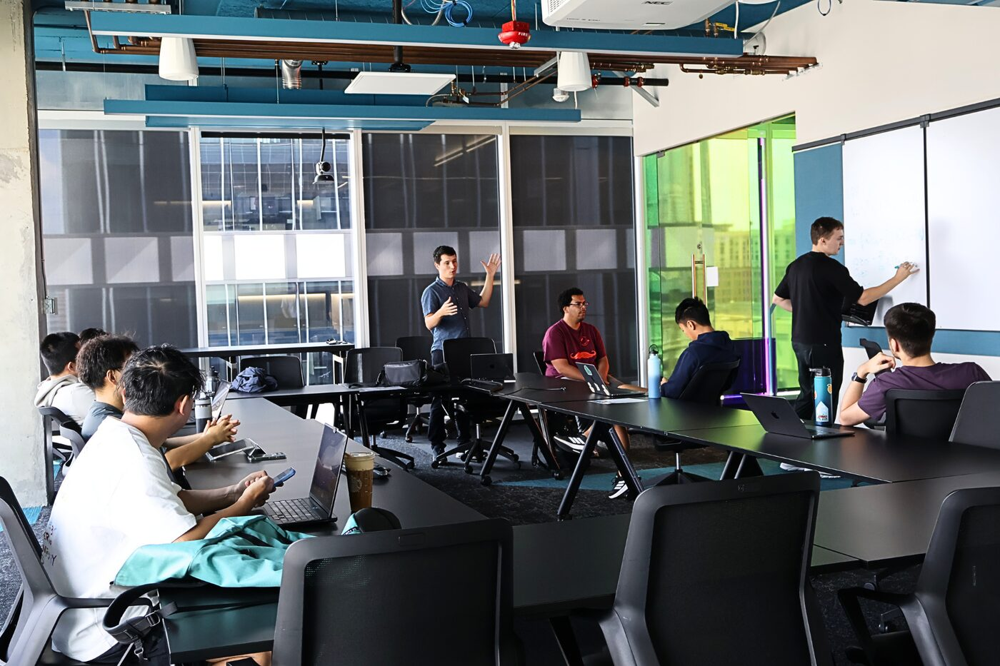
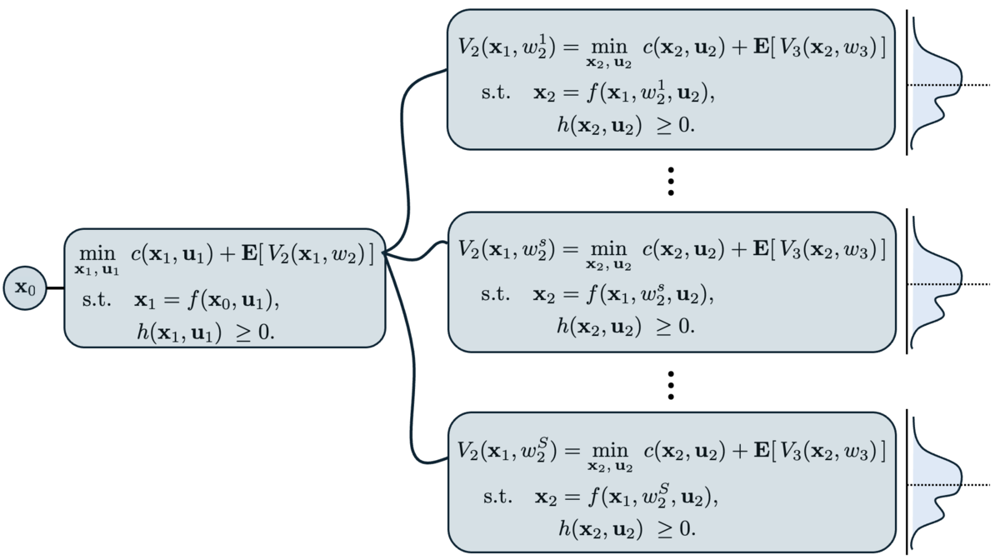

Teaching
Teaching mathematical programming, optimal control and reinforcement learning together
A student-led PhD course, designed with Michael Klamkin for Fall 2025, that teaches the three fields around shared problems and compares their methods by what each assumes.

ISyE 8803 · Special Topics on Optimal Control and Learning
A student-led, faculty-graded course for credit on sequential decision-making and control of dynamical systems. It starts from problems and works backward to the methods that solve them: Classical optimal control and numerical optimization, reinforcement learning, PDE-constrained optimization (finite elements, neural differential equations, PINNs, neural operators) and GPU-accelerated workflows. The aim is for students to see where mathematical programming, optimal control and reinforcement learning make different assumptions about the same problem.
Every student lectures, reviews peers’ work and writes a chapter of an open online book; the whole course runs on GitHub, so every contribution is public.
Role: Course design with Michael Klamkin, the opening lecture, coordination of guest lectures, and the course repository and website.

“While Georgia Tech offers excellent courses on optimization, control, and learning, we found no single class that connected all these fields in a cohesive way. In our research, it was clear these topics are deeply interconnected.”
From “Georgia Tech Students Take Charge with New AI and Engineering Course”, Georgia Tech News, September 2025
Guest lectures
Recorded and public on the LearningToOptimize YouTube channel.
Joaquim Dias Garcia · Stochastic dual dynamic programming. Video ↗
Henrique Ferrolho · Robot trajectory optimization in Julia. Video ↗
François Pacaud · GPU-accelerated nonlinear programming for optimal control. Video ↗
Chris Rackauckas · Neural differential equations and adjoints. Video ↗
Charlelie Laurent (NVIDIA PhysicsNeMo) · Physics-ML at scale. Video ↗